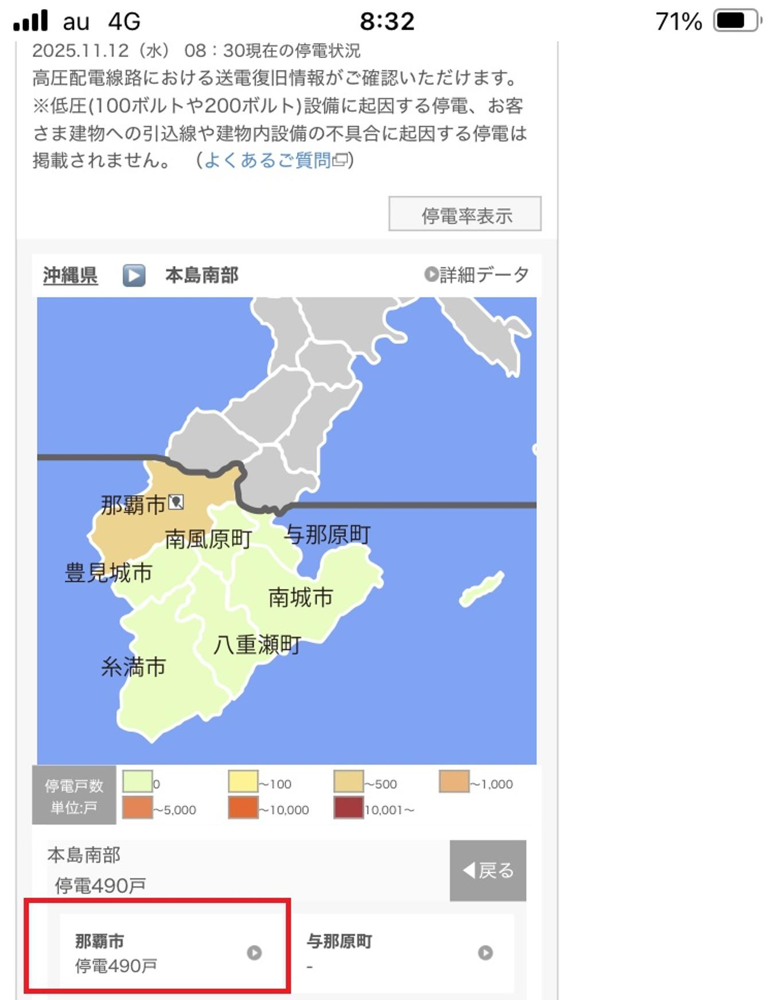

うるがいの話 ある日
最新: 突然の停電【うるがいの話 ある日】とは 一日だけのプログです
『うるがいの話』の最新一日だけのプログで、通信料が少なく経済的だ。カニの画像をクリックすると全ての日付が載る『うるがいの話』サイトを表示します
|
|
【うるがいの話】 うるがい(ｳﾙｶﾞｲ urugai)とは、『もずくがに』の名前でとても大きくなります。 |
|---|---|
|
|
【カミマヤーの話】 猫のことを方言でマヤーといいます。カミマヤー（kamimayaa）とは、神の猫のことです。 |
|
【たながぁの音楽】 たながぁ（ﾀﾅｶﾞｰ tanagaa）とは手長えびのことで、何種類かあり大きいのは車 エビぐらいになります。 |

|
【ぶながぁの話】 ぶながぁ(ﾌﾞﾅｶﾞｰ bunagaa)とは、赤い髪の毛、赤い身体、そして身長は１ｍ２０ｃｍ ぐらい、川の蟹を食べているの目撃された。場所は沖縄県国頭郡大宜味村のと ある村僕の隣近所に住んでいる爺さんから、聞いた話です。 |
|
|
【ギーマの話】 ギーマ(giima)とは、山原の里山に咲くスズランに似た、 花を付けます。実は食べられます、 気が付くと口の周りが紫になっています。 |
2025年11月12日 (水）突然の停電
16:11

朝の８時２分頃、突然の停電、ブレーカーが飛んでいないか調べ
る。特に問題なし、２分後電気がつく。洗濯が、後１０分で終わ
るところだったのに。ところが、８時半また停電、なかなか復旧
しない。隣にも電話するが、繋がらない。恐らく、この一帯は停
電だろうと。しばらくして、お隣さんから停電だとの電話がある
『皆で停電と電話すれば、早く直してくれるのでは』と適当なこ
とを言っている。ヨメが、電話したらと言う。電話番号は？、以
前電話したでしょう、ムカとくる。スマホで停電で情報を確認す
るとこの附近が、停電であると分かった。今更、電話してもね。

そして、９時半に電源は復旧した。電気がないと何もできないッ
スね。復旧した電源のもと、パソコンのプログで電話番号を確認
スマホに連絡先として登録した。
２０２３年の停電